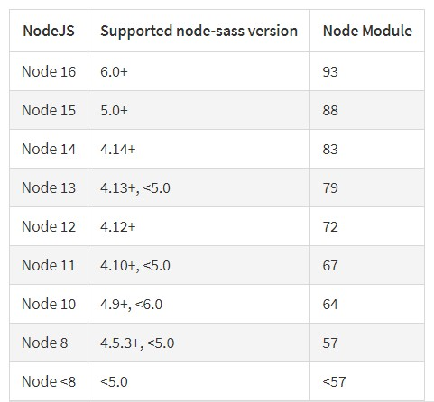
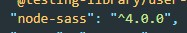
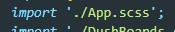

Для того что бы использовать препроцессор SASS в React необходимо установить пакет который называется node sass
Но перед тем как устанавливать этот пакет необходимо обратить внимание на один нюанс. Дело в то, что определенные версии NODE SASS работают с определенными версиями Node.js. Соответствие версий можно посмотреть в таблице на официальном сайте. Выглядит она так:
Т.е. перед тем как устанавливать SASS необходимо уточнить какая у нас версия Node.js, сделать это можно введя в консоле команду:
node -vДля того что бы установить node-sass нужно версии вводим в консоле вот такую команду
npm install node-sass@4.14В этом примере мы установим версию 4.14
В случае если мы не указали версию node-sass у нас установится последняя версия программы. Как это исправить? Открываем package.json, ищем в списке dependencies - node-sass и меняем первую цифру. Если нам нужна 4-ая версия, запись будет выглядеть вот так:
После чего просто переустанавливаем зависимости
npm iВсе что нам остается это переименовать файлы css в scss и поправить расширения файлов стилей в импортах
